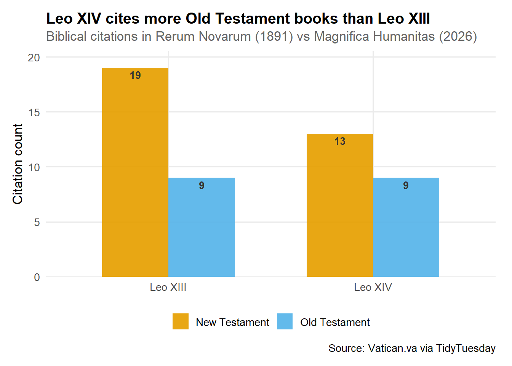
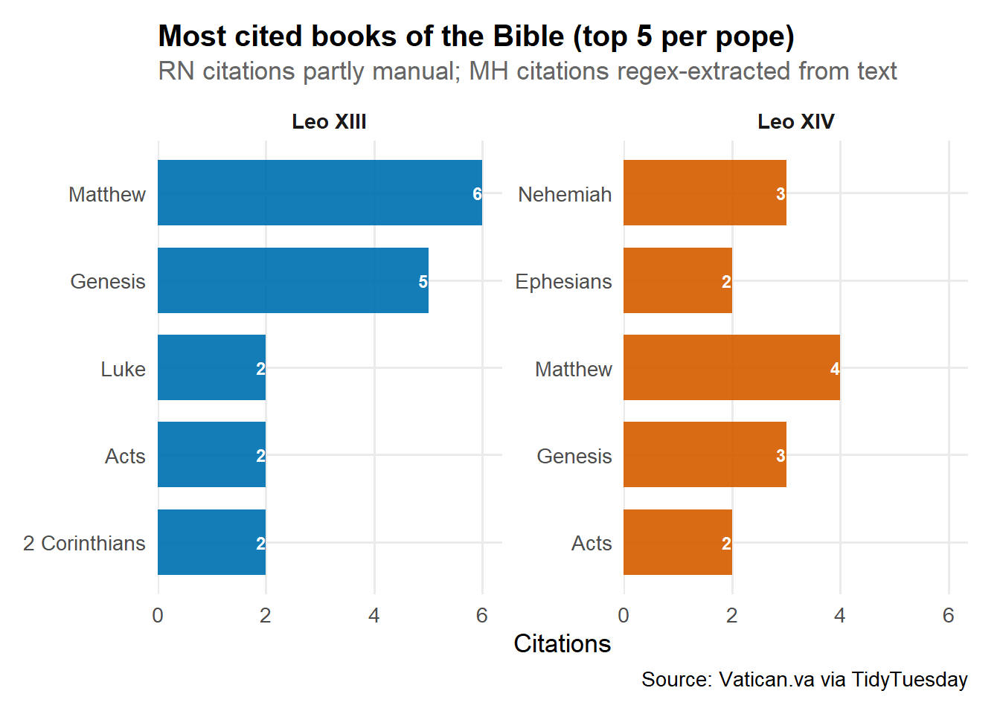
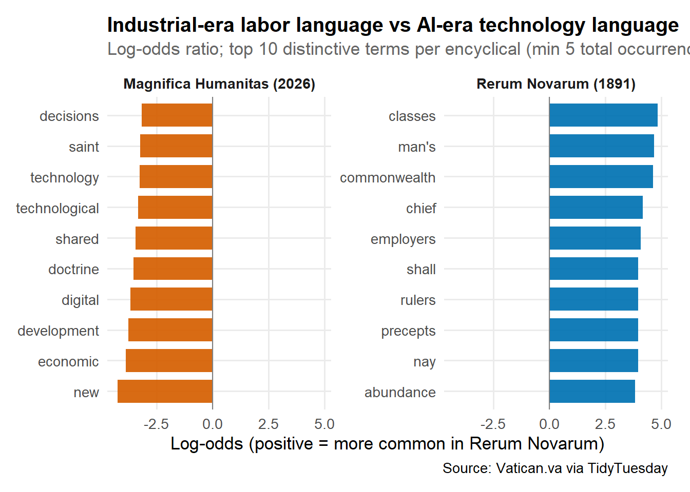
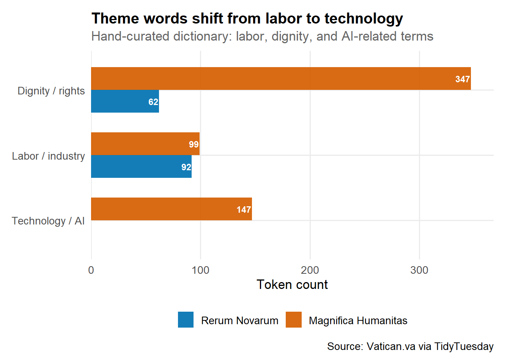

Data from TidyTuesday 2026-06-23: paragraph text from Rerum Novarum (1891) and Magnifica Humanitas (2026), a catalog of 213 papal encyclicals, and scripture citations extracted from both texts.
“Humanity, created by God in all its grandeur, is today facing a pivotal choice: either to construct a new Tower of Babel or to build the city in which God and humanity dwell together.” — Pope Leo XIV, Magnifica Humanitas §1
Angle 1: Encyclical output over time
How has papal encyclical output changed from 1878 to 2026?
summarise_encyclical_output(papal_encyclicals) |>head(10) |> knitr::kable(caption ="Encyclical counts by pope (top 10)")
Encyclical counts by pope (top 10)
pope
encyclicals
Leo XIII
86
Pius XII
39
Pius XI
23
Pius X
16
John Paul II
14
Benedict XV
12
John XXIII
8
Paul VI
7
Francis
4
Benedict XVI
3
Takeaway: Encyclical volume peaked in the late 19th and early 20th centuries — Leo XIII alone accounts for 86. Francis published only 4 in this catalog, reflecting a shift toward other forms of papal communication, not necessarily less teaching.
Angle 2: Scripture emphasis
Which books of the Bible does each pope cite, and what does that reveal about theological emphasis?
Code
plot_scripture_testament(scripture_references)

Code
plot_scripture_books(scripture_references)

Code
summarise_scripture(scripture_references) |> knitr::kable(caption ="Scripture citations by pope, testament, and book")
Scripture citations by pope, testament, and book
pope
testament
book
n
Leo XIII
New Testament
Matthew
6
Leo XIII
Old Testament
Genesis
5
Leo XIII
New Testament
2 Corinthians
2
Leo XIII
New Testament
Acts
2
Leo XIII
New Testament
Luke
2
Leo XIII
New Testament
Romans
2
Leo XIII
New Testament
1 Corinthians
1
Leo XIII
New Testament
1 Timothy
1
Leo XIII
New Testament
2 Timothy
1
Leo XIII
New Testament
James
1
Leo XIII
New Testament
Mark
1
Leo XIII
Old Testament
Deuteronomy
1
Leo XIII
Old Testament
Ecclesiastes
1
Leo XIII
Old Testament
Exodus
1
Leo XIII
Old Testament
Proverbs
1
Leo XIV
New Testament
Matthew
4
Leo XIV
Old Testament
Genesis
3
Leo XIV
Old Testament
Nehemiah
3
Leo XIV
New Testament
Acts
2
Leo XIV
New Testament
Ephesians
2
Leo XIV
New Testament
John
2
Leo XIV
Old Testament
Psalms
2
Leo XIV
New Testament
1 Corinthians
1
Leo XIV
New Testament
1 Peter
1
Leo XIV
New Testament
Mark
1
Leo XIV
Old Testament
Proverbs
1
Takeaway: Leo XIII draws heavily on the New Testament (Matthew, Genesis, Corinthians) in Rerum Novarum. Leo XIV cites a broader mix including Old Testament prophets in Magnifica Humanitas. RN citations were partly manually mapped; MH citations were regex-extracted from the text.
Angle 3: Vocabulary evolution
How does the vocabulary of Catholic Social Teaching evolve from the Industrial Revolution to the AI Revolution?
Code
plot_vocabulary_contrast(tokens)

Code
plot_theme_words(tokens)

Code
summarise_theme_words(tokens) |> knitr::kable(caption ="Theme word counts by encyclical")
Theme word counts by encyclical
theme
Rerum Novarum
Magnifica Humanitas
Dignity / rights
62
347
Labor / industry
92
99
Technology / AI
0
147
Takeaway:Rerum Novarum is dominated by labor, property, and workers’ rights language; Magnifica Humanitas brings in technology, digital, and intelligence. The log-odds chart highlights era-specific vocabulary more than shared social-doctrine terms.
Angle 4: Textual lineage
Which passages of Magnifica Humanitas are most textually similar to Rerum Novarum?
summarise_text_similarity(similarity) |> knitr::kable(digits =3, caption ="Top MH paragraphs by similarity to RN")
Top MH paragraphs by similarity to RN
mh_paragraph
rn_paragraph
similarity
word_count
245
57
0.142
150
41
63
0.129
153
57
13
0.125
151
165
13
0.125
105
65
8
0.115
155
66
4
0.114
153
49
27
0.107
171
130
44
0.105
195
55
16
0.102
140
69
35
0.099
157
Takeaway: Several MH paragraphs show moderate TF-IDF similarity to RN sections on human dignity and social order — suggestive of intellectual lineage, not proof of direct quotation. Similarity is based on shared vocabulary, not semantic embeddings.
Angle 5: Classify pope by paragraph
Can a model reliably distinguish which pope wrote a paragraph?
Takeaway: A lasso logistic model on bag-of-words features often beats the 50% baseline on hold-out paragraphs. The chart shows the top words per pope on each side of zero — coefficients reflect topic words (labor vs technology), not abstract “style.” With only two documents from different eras, treat this as exploratory.